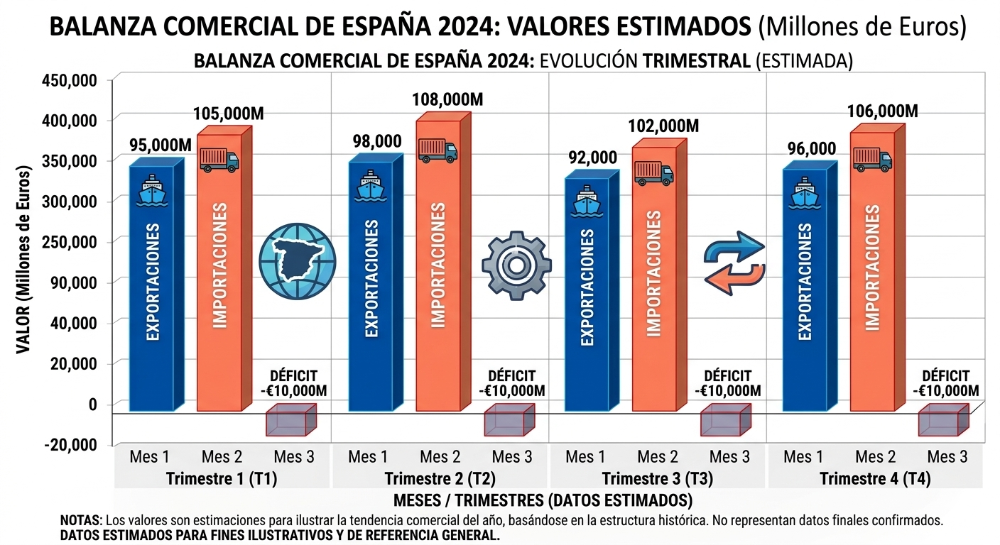
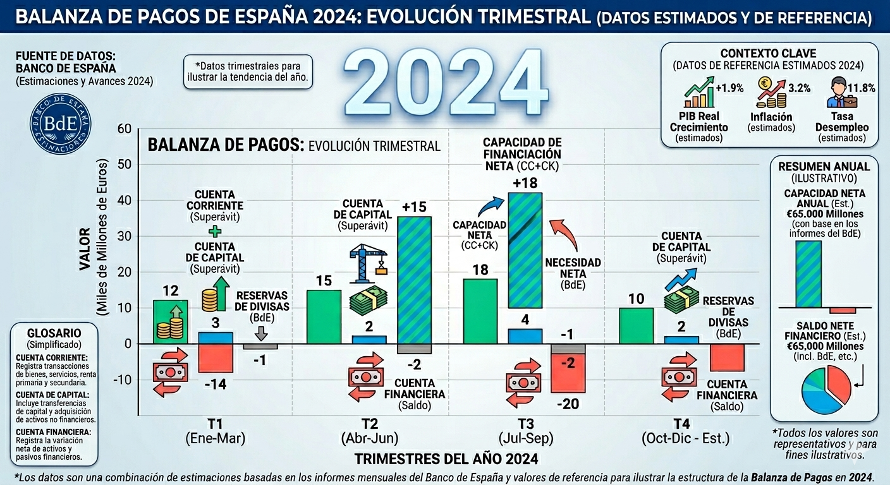
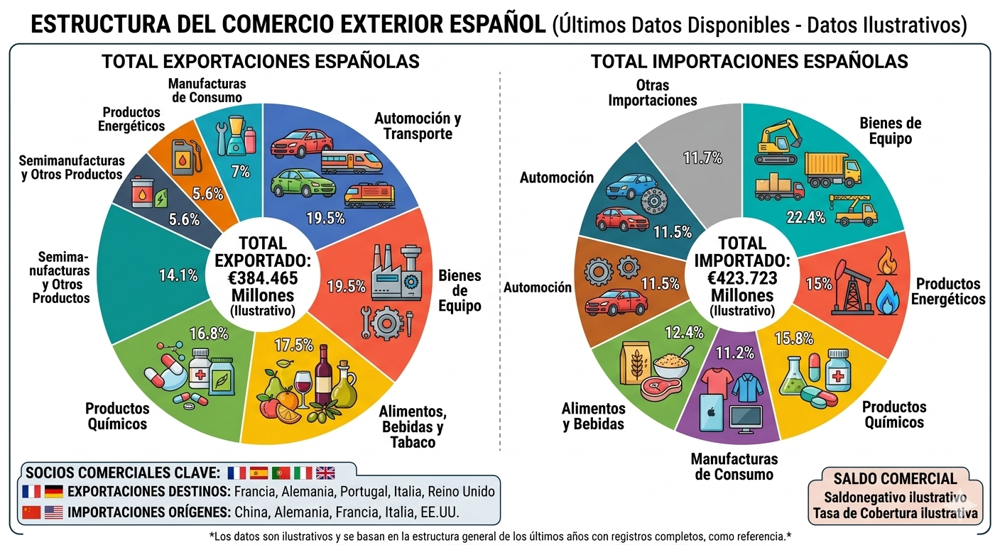

Navegación
¡Explora!
 (4).png)
Comercio en Europa
El comercio en Europa
La Unión Europea ha desarrollado un papel fundamental en el comercio internacional desde la Segunda Guerra Mundial, constituyendo en la actualidad una de las principales economías mundiales, siendo la mayor compradora y vendedora global . Esta actividad es un pilar fundamental de su economía, produciendo aproximadamente el 70% del PIB y generando empleo para más de 34 millones de personas en la Unión Europea.
En su comercio interior , los países comunitarios se benefician del mercado único más grande del mundo (más de 450 millones de personas), potenciado por la libre circulación de mercancías, capitales y servicios, la armonización de las legislaciones nacionales y el uso del euro como moneda oficial en la mayor parte de los Estados miembros . Casi el 70% de las exportaciones de la UE tienen como destino otro Estado de la organización.
Respecto al comercio exterior, la UE es el segundo mayor exportador de mercancías tras China y tiene como principales socios a:
- Estados Unidos : Es el destino principal de las exportaciones de bienes de la UE y su socio más importante en el comercio de servicios.
- China : Es el principal proveedor de productos para la UE, siendo el origen de la mayor parte de las importaciones extracomunitarias.
- Otros: socios Destacan el Reino Unido (especialmente tras su salida de la UE), Suiza, Rusia y Japón
Existe una política exterior común que aplica aranceles y tasas comunes para los productos importados de países ajenos al bloque. Los acuerdos comerciales con otros países permiten reducir aranceles y asegurar unos estándares de calidad y protección del medio ambiente.
.png).png)
El intercambio comercial europeo se centra en productos de alto valor añadido:
- Exportaciones : El 80% son bienes industriales, destacando la maquinaria, equipos de transporte, productos químicos y manufacturas de consumo.
- Importaciones : Europa compra principalmente maquinaria, vehículos y productos químicos, pero añade un peso significativo a la importación de combustibles y productos energéticos.
El comercio europeo ha enfrentado desafíos significativos como la pandemia de COVID-19, que frenó la recuperación de los servicios y provocó el desabastecimiento de suministros en la industria. Además, el aumento de los costes de transporte marítimo y de la energía ha presionado los precios al alza.
El comercio español
El comercio en España
El comercio es muy importante en España: supone más del 12% del dinero que produce el país y da trabajo a más del 15% de la gente.
1. Comercio interior: transformación y tipos .
Predomina el pequeño comercio tradicional de carácter familiar y trato personalizado, concentrado en los centros urbanos. Más de la mitad de quienes trabajan en este sector lo hacen en empresas de menos de 10 empleados, con una alta presencia de mano de obra femenina .
Otro rasgo a destacar es su distribución regional.Existe una densidad desigual de locales minoristas; Mientras que Extremadura, Galicia y Canarias tienen las mayores tasas por habitante, Madrid, País Vasco y Aragón presentan las menores.
Sin embargo, el comercio tradicional (tiendas de barrio y familiares) ha cambiado mucho por la competencia de las grandes superficies y la globalización. Ahora usan más publicidad y tecnología para competir con grandes superficies.
Han surgido nuevas formas de comercio:
- Franquicias : tiendas que venden productos de una marca conocida pagando una licencia.
- Supermercados e hipermercados : tiendas grandes donde la gente se sirve sola.
- Tiendas especializadas : venden solo un tipo de producto (bricolaje, muebles, deportes...).
- Centros comerciales : grandes espacios con muchas tiendas diferentes.
- Comercio electrónico : comprar y vender por Internet, con envíos a casa. Este último ha crecido un 36% en 2020 debido a la pandemia, convirtiéndose en una tendencia imparable que desplaza formas de venta física.
2. Comercio exterior: relación con la Unión Europea
España es uno de los principales países en comercio de bienes y servicios del mundo y se ha incrementado notablemente tras la integración de España en la Unión Europea. En el comercio exterior, los bienes físicos representan el 81% de los ingresos, aunque los servicios avanzados ganan terreno.
A pesar del déficit de la balanza comercial (pues España importa más bienes que los que exporta, principalmente por la fuerte dependencia energética, que obliga a importar grandes volúmenes de petróleo y gas natural, además de maquinaria industrial y productos químicos), la balanza de pagos española presenta superávit. gracias a:
● La aportación de los servicios (turismo y servicios de alto valor añadido como transporte, las telecomunicaciones , los servicios informáticos o la ingeniería.)
● Una mayor competitividad e internacionalización por parte de las empresas , elevando las exportaciones del 28,6% del PIB en el año 2000 al 34,9% en 2019 .
Exporta sobre todo a países de la Unión Europea como Francia, Alemania, Italia y Portugal . Fuera de la UE, China es el principal origen de las importaciones, seguido de EE. UU. UU., Reino Unido, Iberoamérica y el Magreb. Destacan los automóviles y material de transporte, bienes de equipo, productos químicos y alimentos (frutas, hortalizas, vino, aceite y quesos).
Importa productos de Alemania, Francia, China, Italia y Reino Unido.


